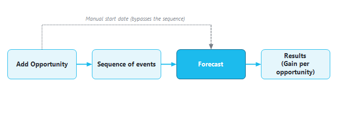
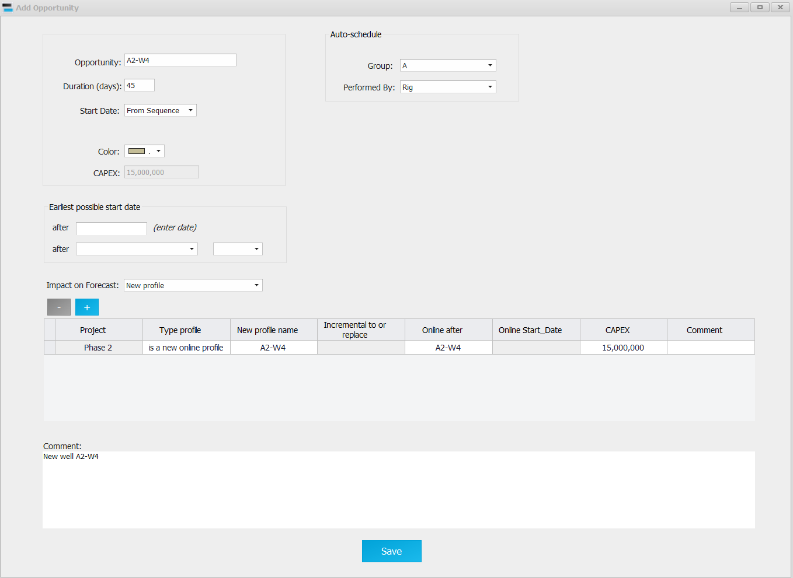
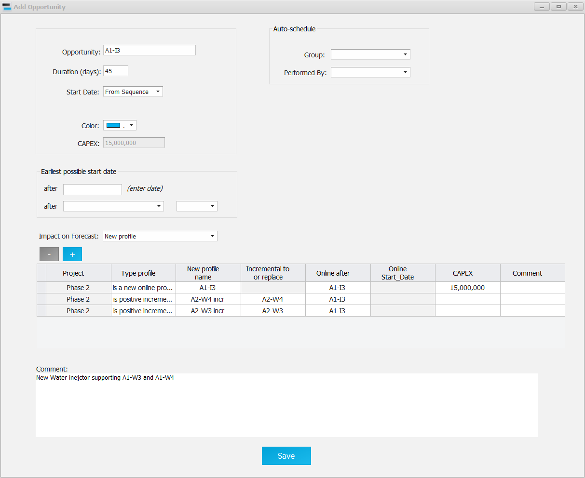
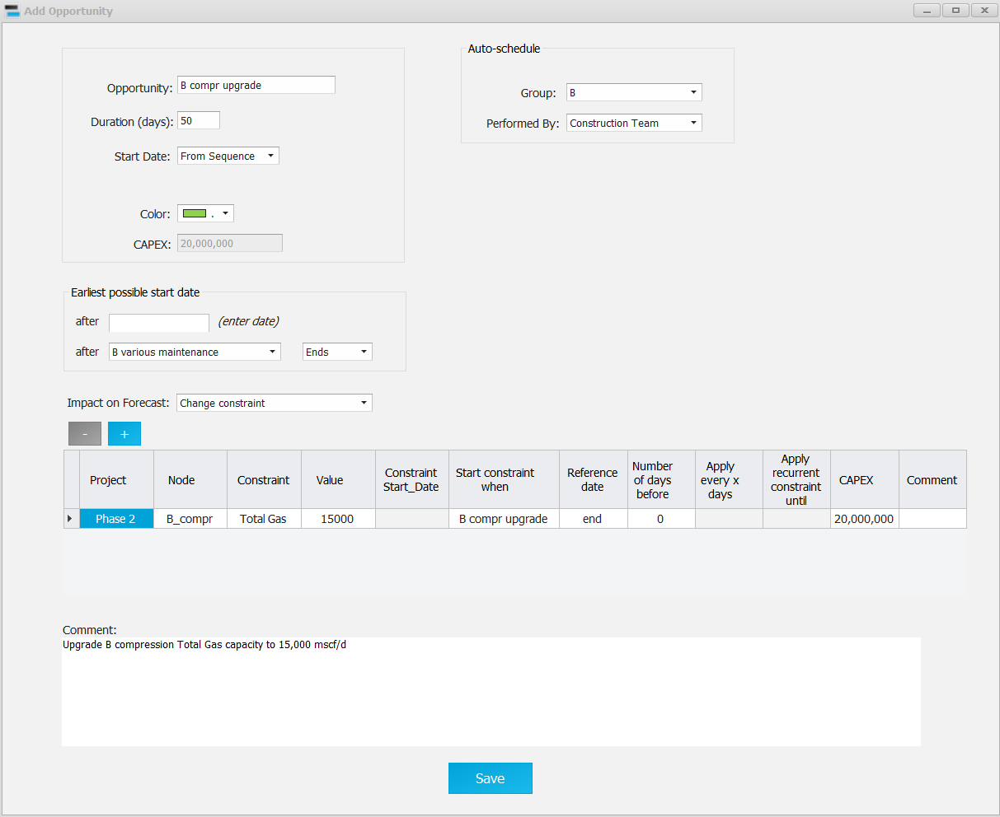
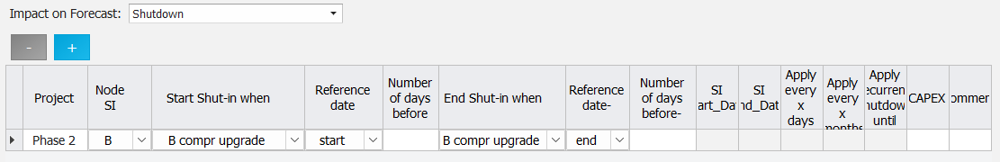
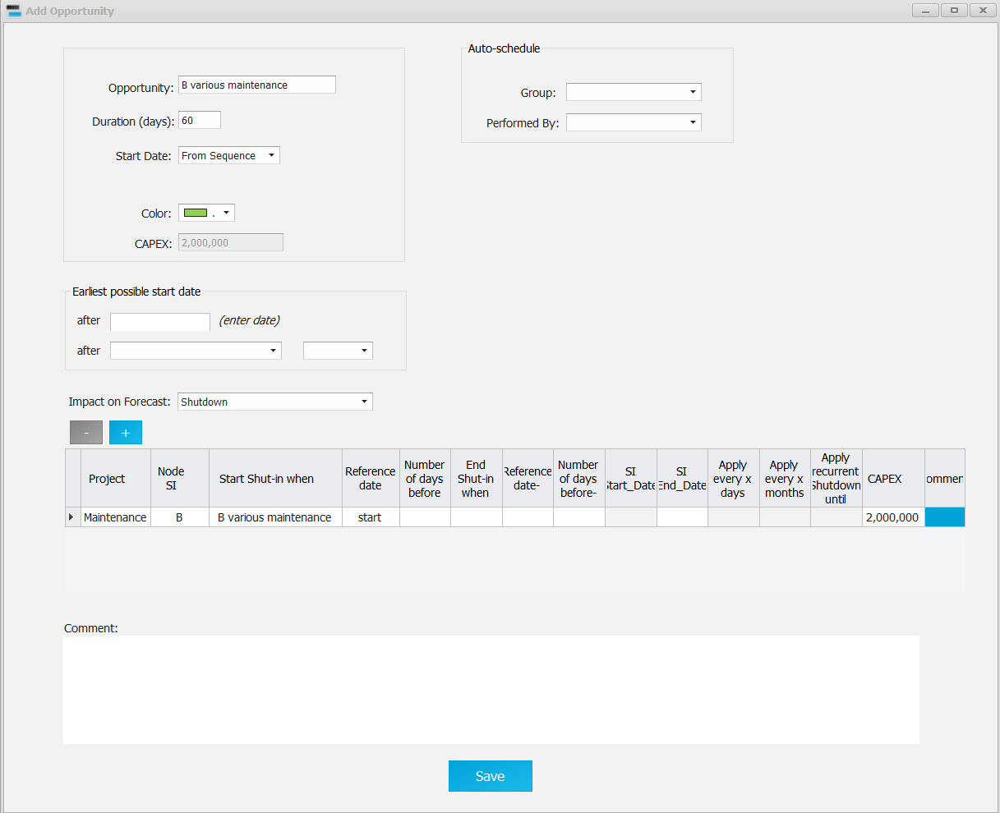
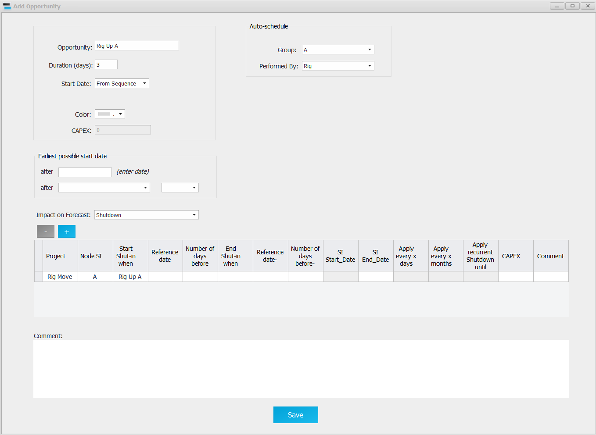
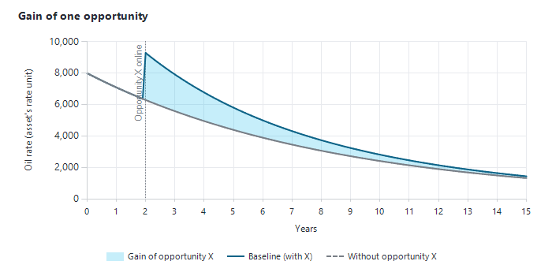

|
Opportunities
1. Overview
An opportunity is an activity that changes the forecast when it is executed, for example:
•drilling a well;
•a work-over or a stimulation;
•a facility upgrade or a maintenance campaign.
Most opportunities add production. Some only bring a shutdown (maintenance). Others, such as a rig move, bring no oil but are needed for an accurate schedule.
|
Example of opportunity
|
Impact on forecast
|
|
Drilling a new oil producer
|
New profile: a new production profile comes online.
|
|
Drilling a new water injector
|
New profile: a new injection profile, plus incremental profiles on the nearby producers it supports.
|
|
Work-over
|
New profile: restarts a well shut in for integrity (or replaces its profile).
|
|
Stimulation
|
New profile: an incremental profile on the well.
|
|
Facility upgrade
|
Change constraint: a new limit at a node of the network.
|
|
Maintenance
|
Shutdown: a node is shut during the work.
|
|
Converting a producer to an injector
|
Conversion.
|
|
New pipeline, new routing
|
Rerouting: a node flows to another node from that date.
|
|
Rig move
|
None, or a short shutdown: needed only for the schedule.
|
A shutdown, a constraint change or a new profile could be given a fixed start date. The Precept philosophy, however, is to make opportunities part of a sequence of events: their start and end dates are relative, so what-if scenarios are easy to build (see Precept philosophy and Sequence of events).

From opportunity to forecast. The sequence gives each opportunity its dates; the forecast applies its impacts at those dates.
2. Opening the opportunities
•Select a scenario on the main window, then click "Opportunities" in the "Expertise" group of the main ribbon. The "All Opportunities" window lists the scenario's opportunities. Use "Filter by project:" to narrow the list.
•"New" opens an empty "Add Opportunity" window. "Edit" (or a double-click on the opportunity name) opens the selected opportunity.
•"Delete" removes the selected opportunities (select full rows). Precept asks for confirmation; a deleted opportunity is also removed from the sequence.
•You can also double-click an opportunity in the main window's schedule to open it.
3. The Add Opportunity window
|
Field
|
Meaning
|
|
Opportunity:
|
The name. Renaming an existing opportunity updates every row linked to it.
|
|
Duration (days):
|
How long the opportunity takes. In a sequence, the next item starts when this one ends.
|
|
Start Date:
|
"From Sequence" (no fixed date: the date comes from the opportunity's place in the sequence) or "Manual" (enter a "Manual Start Date").
|
|
Color:
|
The colour of the opportunity in the sequence (shown with "From Sequence" only).
|
|
CAPEX: / OPEX:
|
Read-only totals: the sum of the CAPEX and OPEX entered on the rows of the impact tables (section 4). They are used in the forecast economics (see Economical screener).
|
|
Earliest possible start date
|
Optional. "after" a date, and/or "after" another opportunity "Starts" or "Ends". If the sequence places the opportunity earlier, it is shown in red in the schedule. Leave it blank if the opportunity can be done at any time; press Delete in the opportunity list to clear it.
|
|
Impact on Forecast:
|
"New profile", "Change constraint", "Shutdown", "Conversion", "Rerouting" or "None". The table below the list shows the rows of the chosen impact; add rows with "+" and remove them with "-" (section 4).
|
|
Project:
|
Each row of an impact table has a "Project" column, which is required. The opportunity takes the project of its first row. With "None", pick the project in the "Project:" list. Shortfalls and gains are grouped by project.
|
|
Comment:
|
Free text.
|
|
Duplicate Opportunity
|
Creates copies of the opportunity (section 6).
|
|
Auto-schedule (Group:, Performed By:)
|
Greyed out: not used in the current version.
|
Click "Save" (or press Ctrl+S). The main window and the "All Opportunities" list refresh with the saved opportunity.
4. Impacts on the forecast
One opportunity can combine several impacts. Pick an impact in "Impact on Forecast:", fill its rows, then pick the next impact and fill its rows; every table is saved. Each row times itself on the opportunity:
•the "… when" / "… after" column names the opportunity;
•"Reference date" is its "start" or "end";
•"Number of days before" shifts the date earlier.
Every row also has "Project", "CAPEX", "OPEX", "OPEX unit", "Group cost to Node" and "Comment".
|
Impact
|
Main columns
|
|
New profile
|
"Type profile" (is a new online profile, is positive incremental to, is negative incremental to, replace, restart under different project, Data acquisition), "New profile name", "Incremental to or replace", "Online after". The profile itself is drawn in the Decline Curves window (see New profile).
|
|
Change constraint
|
"Node" (a node, "All new Wells" or "Field"), "Constraint", "Value", "Start constraint when", "End constraint when", recurrence ("Apply every x days", "Apply recurrent constraint until"). See Constraints changes vs time.
|
|
Shutdown
|
"Node SI", "Start Shut-in when" / "Reference date" / "Number of days before", "End Shut-in when" / "Reference date-" / "Number of days before-", "Well has potential during SD", recurrence columns. See Shutdown.
|
|
Conversion
|
"Well", "Conversion to", "Conversion after", "Production to or injection from", recurrence ("conversion every x months", "Apply recurrent conversion until"). See Well conversion.
|
|
Rerouting
|
"Node", "Rerouting to", "Rerouting after": the node flows to another node from that date.
|
|
None
|
No table; only the schedule (duration) is used. Pick the project in "Project:".
|
5. Examples
5.1 Drilling a new oil producer
The opportunity "A2-W4" lasts 45 days (drilling). "Start Date" is "From Sequence": there is no fixed date, it takes its place in the sequence of events. The colour is used in the sequence. "Earliest possible start date" is blank because the well can be drilled at any time.
"Impact on Forecast" is "New profile". The row brings the new profile A2-W4 online after the opportunity (the well was first added to the model, see Add wells to Asset Model). Its CAPEX of 15 million (in the asset's currency) is used by the forecast economics.

5.2 Drilling a new water injector
The opportunity "A1-I3" lasts 45 days, "From Sequence", with no earliest start date. Its "New profile" table has three rows:
•A1-I3 "is a new online profile": the injector comes online, with a CAPEX of 15 million.
•A2-W4 incr "is positive incremental to" A2-W4: the extra oil of A2-W4 thanks to the injection.
•A2-W3 incr "is positive incremental to" A2-W3.
The incremental profiles are viewed and edited in the Decline Curves window.

5.3 Compressor upgrade
The opportunity "B compr upgrade" lasts 50 days, "From Sequence". Its earliest possible start is after "B various maintenance" "Ends": if the sequence places it before the end of that maintenance, it is shown in red.
"Impact on Forecast" is "Change constraint". When the opportunity ends, the node B_compr gets a new "Total Gas" constraint of 15,000, in the asset's gas-rate unit. The row belongs to the project "Phase 2" and carries a CAPEX of 20 million.

The node B is also shut during the 50 days of work. Switch "Impact on Forecast" to "Shutdown" and add the row: start shut-in at the "start" of "B compr upgrade", end at its "end".

5.4 Maintenance
The opportunity "B various maintenance" lasts 60 days, "From Sequence", and can be done at any time (no earliest start date). Its "Shutdown" row closes node B during the 60 days. It belongs to the project "Maintenance" and costs 2 million.

5.5 Rig move
"Rig Up A" brings no oil but is needed for scheduling. It lasts 3 days, "From Sequence". Its "Shutdown" row closes node A during the move. It belongs to the project "Rig Move".

6. Duplicating an opportunity
To create several similar opportunities (for example the same work-over on several wells):
1.Open the opportunity to copy.
2.In "Duplicate Opportunity", type in "replace:" the part of the name to change (for example the well name). The box turns green when the text is found in the opportunity name.
3.In the "Duplicate as" table, add one row per copy with the replacement text ("+" / "-" add and remove rows).
4.Click "Save". Each copy gets the same duration and impacts. The text is replaced in the name, the comment, and the rows of its new-profile, shutdown, constraint and conversion tables.
7. Uncertain duration
For a probabilistic forecast, opportunity durations can be uncertain:
1.Open "Probabilistic distributions" and choose "Opportunities duration".
2.Each opportunity is listed with its duration as "Mode Duration (days)". Enter a "Min Duration (days)" and a "Max Duration (days)".
3.Click "Save".
Each probabilistic run samples a duration between Min and Max (see Probabilistic forecast). Opportunities have no chance-of-success input; risking of exploration prospects is done in the decision tree (section 10).
8. Gain per opportunity
"Gain per opportunity" measures what each opportunity adds to the forecast. Precept runs the scenario with all its opportunities (the baseline), then once for each opportunity with that opportunity removed. The difference with the baseline is the opportunity's gain.
1.Save the scenario.
2.Click "Gain per opportunity" in the "Forecast" group of the main ribbon. The "Opportunity Gain Workflow" panel opens.
3.In "Calculate Opportunity gain for:", choose "All Opportunities" or one project.
4.In "Calculate for Opportunities executed before:", keep the forecast end date or enter an earlier date.
5.Click "Calculate" and confirm. "Stop" on the progress bar ends the whole workflow.
Only opportunities starting between the forecast start and that date are assessed. Opportunities whose name contains "Rig" and opportunities with "None" impact are skipped. The runs use a temporary copy of the scenario, so your scenario is not changed.
To see the results, click "Charts" in the "Forecast Results" group of the main ribbon and set the mode to "Opportunity Gain". Click "Tornado" to rank the opportunities by gain.

The gain of one opportunity is the difference between the baseline forecast and the forecast without that opportunity.
9. Opportunity Funnel (portfolio view)
The "Funnel" button in the "Forecast Results" group of the main ribbon opens the "Opportunity Funnel", when enabled on your installation. It is a Kanban board of the asset's opportunity portfolio across maturation phases. The funnel holds its own curated list of opportunities: they are added to it explicitly and are not taken from the schedule.
•Phases: Identify, Assess, Select, Define, Execute and Operate by default. "Manage phases" edits the "Rank", "Phase", "Gate" and "Color" of each column.
•"Add opportunity": enter a name; the card starts in the first phase.
•Drag a card to another column to change its phase.
•Double-click a card, or right-click it and choose "Open ID card", to open its "Opportunity Data" card.
•Right-click a card and choose "Customize card parameters…" to pick what the cards show: Cum Oil, Cum Gas, Peak oil rate, Plateau rate, Number of wells, CAPEX, OPEX or First oil date.
•Right-click a card and choose "Delete from funnel" to delete the opportunity's data and documents. This cannot be undone.
•Charts on the right: "Cum Oil (P50) by phase", "Top opportunities by Cum Oil (P90-P10)" and "Portfolio creaming curve".
The "Opportunity Data" card is the opportunity's reference sheet:
•"Current phase:";
•a grid of "Parameter" with "P90 (low)", "P50", "P10 (high)" and "Unit" (volumes, production, wells, economics, schedule), to which you can add parameters;
•a comment, "Documents", and a map image and a forecast image.
10. Screening exploration opportunities
For exploration and appraisal prospects, the "Field data" window ("Expertise" group, when enabled) offers two screening tools:
•"Analogues dashboard" opens "Analogue Screening". It filters the analogue-field database (sliders for numeric properties, check lists for categories) and shows a distribution chart per property, a cross-plot, a map and the production of the highlighted analogues. The current field is marked as the reference. Buttons: "Reset filters", "Edit analogue data", "Generate analogues table", "Charts…". See also Analogues.
•"Flow diagram" opens "Risked volumes - decision tree" for the selected prospect (section 10.1).
10.1 The decision tree
The tree has a fixed shape: exploration well → success or dry → oil or gas → P10 / P50 / P90 cases. You enter:
•the chance of geological success ("% Success");
•the chance that a discovery is oil ("% Oil");
•the split between the P10, P50 and P90 cases (%);
•per case: the recoverable volume ("Mbo"), the number of wells ("E&A strategy") and the development ("Dev.": Co-Dev, Stand-alone, Tie-back, TBC).
Precept computes and updates as you type:
•each path's probability ("Proba" = success × oil × case split) and "Mbo/well";
•the "Risked" volume (the probability-weighted mean) and the share of developed and not-developed cases.
The chance of success, the well counts and the volumes stay in step with the Field data window. Click "Save" to keep the inputs.
|